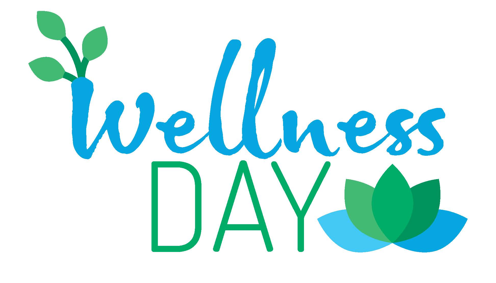

People Against Bullying Online (PABO)
About Us
We are a nonprofit organization committed to stopping online hate crimes. With the increase in social media, online communication has soared to unforeseen levels. Unfortunately, this increase has brought about negative interactions between online users. In fact, roughly 4 in 10 Americans have experienced a form of online harrassment. This is a problem we aim to prevent through info sessions, charity, and interacting and educating in schools. Overall, our mission is to educate individuals in recognizing and preventing online hate crimes when they happen.
Make a Difference!
Our organization holds several events each year to raise funds for prevention and support other causes. Interested in making a difference? Join us for one of the events below!
- Wellness and Sensitivity Day 
- Project Semicolon - Suicide Prevention Fundraiser
- Cyberbullying Support Group Meeting
Gallery
Examples of Cyber Bullying
Cyber bullying happens more than it's reported, here are some examples:
Effects of Cyber Bullying
Cyber bullying and harrasment online can cause depression and can lead to suicide.
Solutions to Cyber Bullying
The solution to Cyber bullying is simple but often overlooked, just blocking the person/ people can solve many problems. It would also help if parents teach their children to be good people and care for others. Reaching out to a teacher or family members can also be helpful